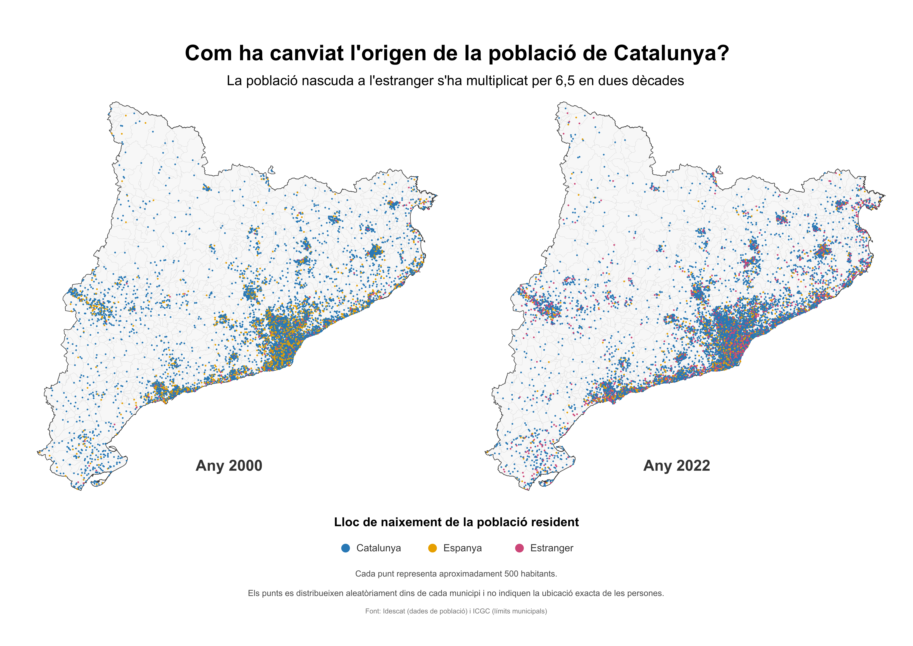

Explora-ho de més a prop
A l’escala de Catalunya, l’àrea metropolitana de Barcelona queda saturada de punts. Al mapa interactiu pots fer zoom a qualsevol zona, alternar entre els dos anys, mostrar o amagar cada lloc de naixement i clicar un municipi per veure quantes persones hi vivien segons on havien nascut.
Obre el mapa interactiuCom llegir el mapa
- Nascuts a Catalunya
- Nascuts a Espanya
- Nascuts a l’estranger
Cada punt representa 500 habitants. Els punts es col·loquen a l’atzar dins de cada municipi: el que és fiable és el nombre de punts de cada municipi, no la posició exacta de cada un.